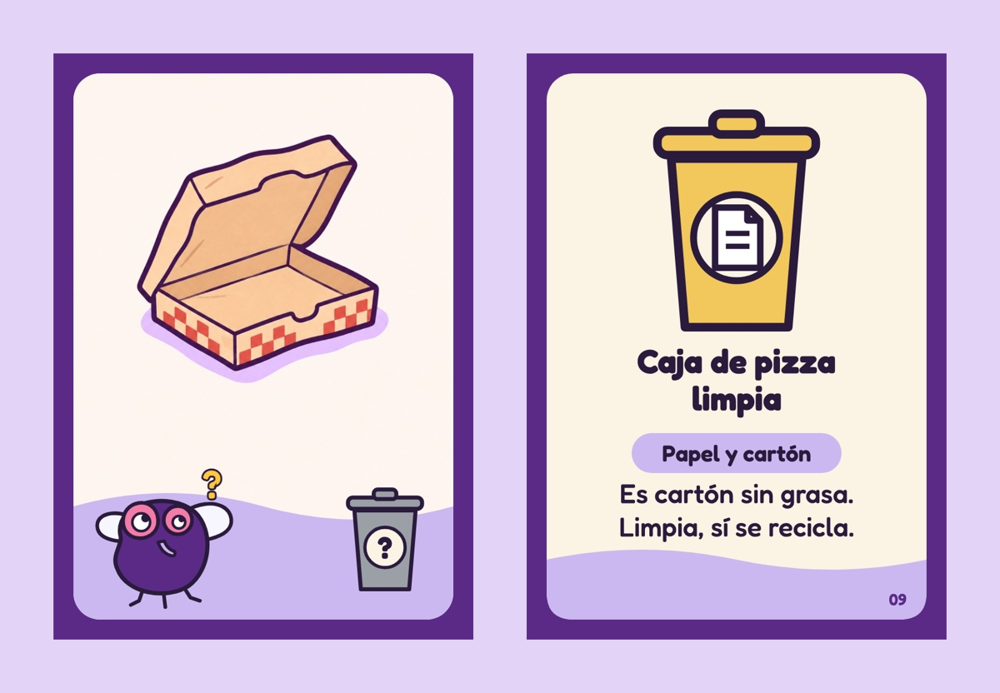

Tarjetas
Al frente, solo el dibujo: nada de color ni texto que dé pistas. Atrás, el bote con su color y su ícono, el nombre y por qué va ahí, en 11 palabras o menos.
Las tarjetas difíciles llevan a la mosca pensando. Son las que cambian de bote según cómo se usaron, como la caja de pizza limpia y la servilleta con comida.